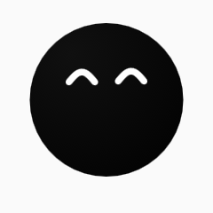
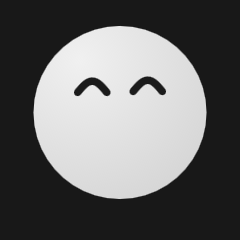
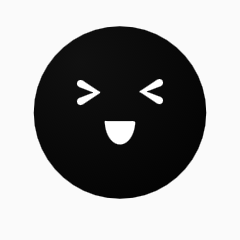
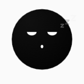
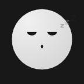
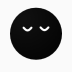
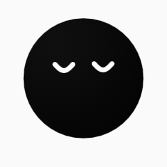
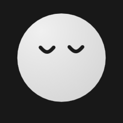
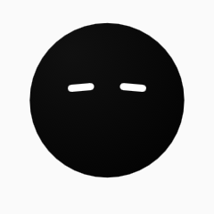
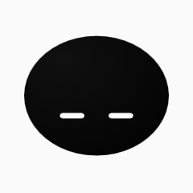

7种表情均由最终 Rive 状态机原生渲染，每种保持3秒。图片采用3倍像素密度，以48或80 CSS尺寸展示。浏览器保持100%缩放。实际手机中的布局、帧率与耗电仍须真机验证。
最终资产：ede427945e365e1dee3342326c116b9deea7171072170c167c8aa2f8fb194249
| 表情 | 48pt 浅色 | 48pt 深色 | 80pt 浅色 | 80pt 深色 |
|---|---|---|---|---|
| 2 柔和开心 |  |  | ||
| 3 大笑 |  | |||
| 16 无语 | ||||
| 17 犯困·哈欠 |  |  | ||
| 18 轻松满足 |  |  |  | |
| 26 无奈 |  | |||
| 28 犯困·趴低 |  |